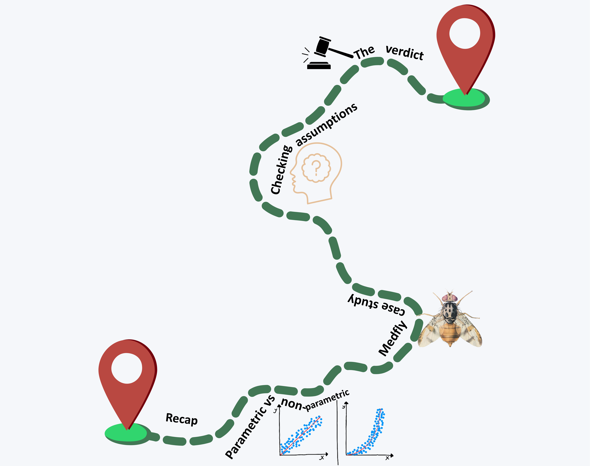
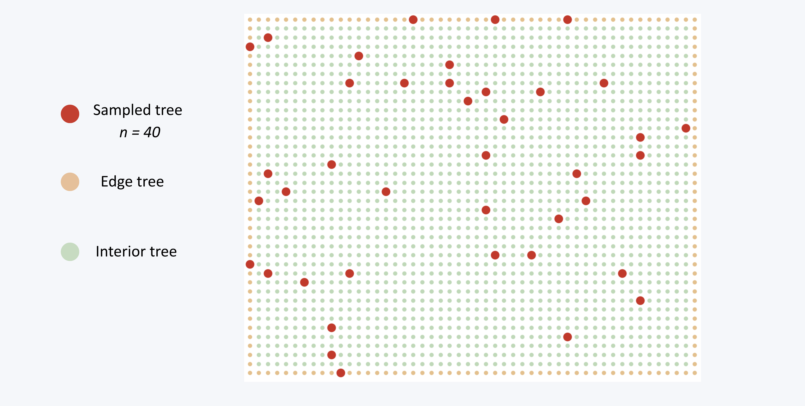
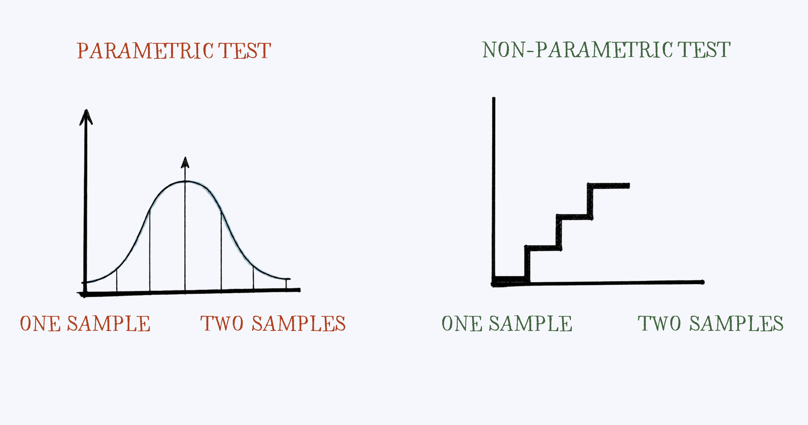
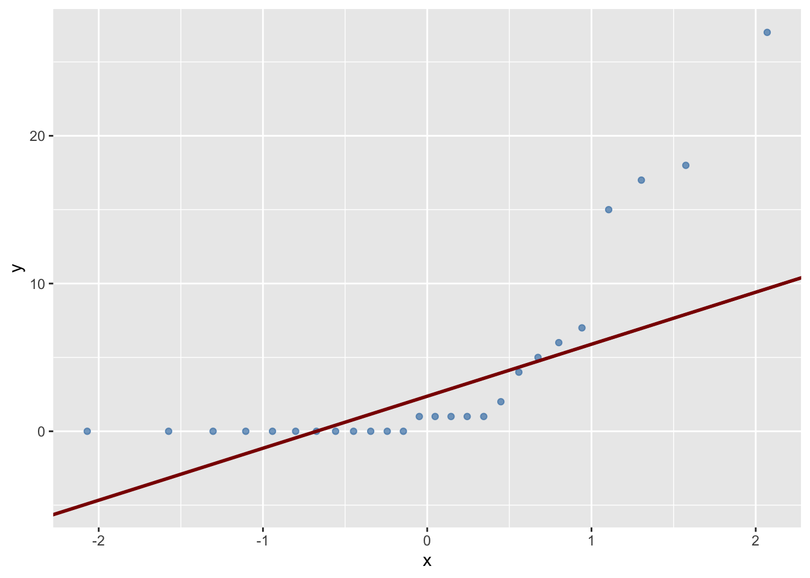
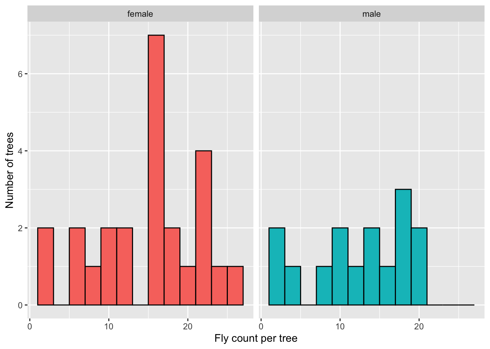
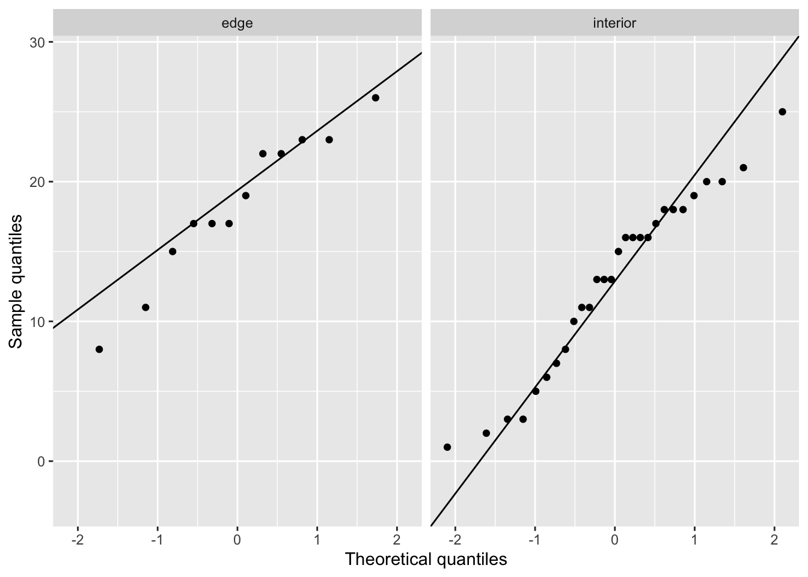

# (1). Dimensions/Size:
nrow(medfly_orchard) # number of rows, Base R
ncol(medfly_orchard) # number of columns, Base R
# (2). Structure/Variable Names:
colnames(medfly_orchard) # variable names, Base R
str(medfly_orchard) # summary of the data structure, Base R
glimpse(medfly_orchard) # summary of the data structure, tidyverse
# (3). Viewing the Actual Data:
head(medfly_orchard) # first 6 rows, Base R
tail(medfly_orchard) # last 6 rows, Base R
# (4). Starting to Summarise the Data:
summary(medfly_orchard) # summary of the data, Base R
tabyl(medfly_orchard, sex) # frequency / percentage, janitor
tabyl(medfly_orchard, tree_type) # frequency / percentage, janitor3 Workshop 3 - Sampling Distributions and Testing for Differences - Extension
Welcome to today’s workshop extension! In this session, like last time, we will be focusing on summarising and testing our knowledge from what we learnt in the main workbook. We will be covering Sampling Distributions and Testing for Differences. We will also be revisiting some of the key terms and concepts from the main workbook, and applying them to a different dataset.
3.1 Your Route Through This Workshop
Here is the plan for this session:
- Recap: refresh your understanding of the key terms from the main workbook - sampling, sampling error, SEM, confidence intervals, t-tests, and statistical significance.
- Medfly case study: apply those terms to a real-world scenario, counting flies in a commercial orchard.
- Parametric vs non-parametric tests: revisit the difference between these two types of test, when to use each, and their common equivalents.
- Exploring the Medfly data: load the dataset and use histograms to get a first look at the distribution of fly counts, split by tree type and sex.
- Checking assumptions: use Q-Q plots and the Shapiro-Wilk test to formally check normality, and Levene’s test to check for equal variances.
- The verdict: based on the assumption checks, decide whether a parametric t-test is appropriate and run it.

By the end, you will have practised the full workflow — from visual inspection of data through to a justified statistical test.
3.2 Open up your Workbook
In this session it would be best to open up the workshop sheet on Posit, this should be in the usual BIO_7056A_2026 space, under workshop_03_sampling_distributions_ext. This will make it easier to run various bits and pieces in this workshop.
3.3 Recapping our Definitions
Let’s first recap some definitions and key terms from the main workbook. Have a play with the ‘Click to expand’ button below to familiarise yourself with the definitions, and then we will apply them to a case study.
Sampling
Selecting a subset (sample) of individuals or observations from a larger population to estimate characteristics of the whole population; without measuring everything.
Sampling error
The difference between a sample statistic and the true population parameter, arising because a sample may not perfectly represent the population.
Probability
A numerical measure (between 0 and 1) of the likelihood that a specific event will occur.
Variance
A measure of how much values differ from the mean, calculated as the average of the squared differences from the mean.
Standard deviation
The square root of the variance, expressed in the original units of the data.
Standard error of the mean (SEM)
An estimate of how much a sample mean is likely to vary from the true population mean: SD / sqrt(n).
Confidence intervals
A range of values, calculated from sample data, likely to contain the true population parameter at a given confidence level (e.g. 95%).
T-tests
Tests whether the difference between two means is larger than sampling error alone would explain.
- One-sample t-test: compares a single sample mean to a hypothesised population mean.
- Two-sample t-test: compares the means of two independent samples, using the standard error of the difference between means.
Statistical significance A result is significant when its p-value falls below a chosen threshold (conventionally p < 0.05) — meaning the result is unlikely to be due to sampling error, not that the effect is large or important.
Now the definitions should ideally be fresh in your mind, let’s check your understanding with a few multiple choice questions.
What is a sample?
What is sampling error?
What is probability?
How is variance calculated?
What is the standard deviation?
How is the standard error of the mean (SEM) calculated?
What is a confidence interval?
What does a t-test assess?
What does a one-sample t-test do?
What does a two-sample t-test do?
What does statistical significance (p < 0.05) actually tell you?
3.4 Medflies in the Orchard - a case study

A UEA research team wants to know the average number of Medflies (Ceratitis capitata) per apple tree in a large commercial orchard containing 2,000 trees. The orchard contains both interior trees and edge trees. Counting flies on every tree is impractical, so the team selects 40 trees at random and counts the flies caught in a trap on each one.
Results from the 40 sampled trees:
- Sample mean: 14.2 flies/tree
- Sample standard deviation: 6.5 flies/tree
- The true mean across all 2,000 trees (found later from a full census) is 13.1 flies/tree
The team also compares mean fly counts on edge trees vs interior trees.
1. What is the population in this scenario?
2. What term describes the 40 trees selected for sampling?
3. The true population mean turned out to be 13.1, but the sample mean was 14.2. This difference is best described as:
4. A colleague argues: “Since our sample mean (14.2) differs from the true population mean (13.1), our sampling method must have been biased.” Which response best evaluates this claim?
5. “The team calculates a 95% confidence interval of 12.0–16.4 flies/tree. Which of the following is the correct interpretation?”
6. “Comparing mean fly counts between edge trees and interior trees calls for which statistical test?”
7. A student claims p = 0.04 for the edge-vs-interior test “proves edge trees definitely have more flies, and the effect must be biologically important.” Is there any flaw with this statement?
3.5 Parametric and Non-Parametric Tests

We learnt in the main workbook about parametric and non-parametric tests, and how to choose between them.What is a parametric test and what is a non-parametric test?
To summarise, parametric tests (like the t-test) assume that the underlying data are normally distributed. We have previously checked the visualisation of the data using histograms these show the skew of the data. If the data are skewed, that assumption may be violated, which can make the test’s results unreliable. However, this does not automatically mean the test result is wrong — it depends on how much the skew is actually affecting the outcome, and we learnt that we can check in two ways:
(1) Remove the influential point(s): Re-run the test excluding the datapoint(s) responsible for the skew, and compare the results. If the conclusion changes, the skew is likely having a meaningful effect on your result.
(2) Compare test types: Run both a parametric test (e.g. a t-test) and its non-parametric equivalent on the same data. If both tests lead to the same conclusion, you can be more confident that the skew is not distorting your result.
As noted above, non-parametric equivalents can be used when your data do not meet the assumptions of parametric tests:
| Parametric test | Non-parametric equivalent |
|---|---|
| One-sample t-test | Wilcoxon signed-rank test |
| Two-sample t-test (unpaired) | Mann-Whitney U test |
| Two-sample t-test (paired) | Wilcoxon signed-rank test |
| Pearson correlation | Spearman correlation |
| One-way analysis of variance | Kruskal-Wallis test |
3.5.1 Putting this into action: what test can we use on our data?
First, load your packages and read in the data. As in the previous workshop, we will use the tidyverse package. The dataset medfly_orchard_data.csv can be found in the data folder of the workshop_03_sampling_distributions_ext space on Posit, and is also available on Blackboard if you would like to practise uploading data to R. Read the data in and name the object medfly_orchard, keeping all packages loaded at the top of your script. If you need a reminder of how to read in a CSV file, refer back to the previous chapter.
Now that the data are loaded, we want to determine whether a parametric or non-parametric test is appropriate. To do this, we first need to assess the distribution of the data. We will start with histograms for a visual impression, before moving on to more formal checks.
Let’s now make some histograms of the fly_count variable in the medfly_orchard dataset, starting with the overall distribution across all 40 sampled trees.
medfly_orchard_histogram_fly_count <- medfly_orchard %>%
ggplot(aes(x = fly_count)) +
geom_histogram(binwidth = 2, fill = "lightblue", colour = "black") +
labs(x = "Fly count per tree", y = "Number of trees")
medfly_orchard_histogram_fly_count
Looking at this histogram, the data do not follow a neat bell-shaped curve. Instead, there appear to be two clusters — a group of trees with relatively low fly counts (around 1–5 flies), and a larger group with higher fly counts (around 13–17 flies), with a noticeable dip in between. This raises two questions: are the data normally distributed, and why do two groups appear to exist? We can begin to explore this by splitting the data by tree type (edge vs interior) and sex (female vs male).
Based on this histogram, what would you say about the distribution of fly counts?
medfly_orchard_histogram_tree_type <- medfly_orchard %>%
ggplot(aes(x = fly_count, fill = tree_type)) +
geom_histogram(binwidth = 2, colour = "black") +
facet_wrap(~ tree_type) +
labs(x = "Fly count per tree", y = "Number of trees") +
theme(legend.position = "none")
medfly_orchard_histogram_tree_type
Edge trees tend to have higher fly counts (peaking around 14–22 flies), while interior trees show a more spread-out distribution with some very low counts. This likely explains the two clusters seen in the overall histogram.
Looking at the tree type histograms, which group appears closest to a normal distribution?
medfly_orchard_histogram_sex <- medfly_orchard %>%
ggplot(aes(x = fly_count, fill = sex)) +
geom_histogram(binwidth = 2, colour = "black") +
facet_wrap(~ sex) +
labs(x = "Fly count per tree", y = "Number of trees") +
theme(legend.position = "none")
medfly_orchard_histogram_sex
Female trees show a clearer peak around 15–17 flies, while male trees are more spread out with no obvious pattern — though this may partly reflect the smaller male sample size (n = 15) rather than a true biological difference. Neither group shows a perfectly normal distribution, which is why we will now move on to more formal checks.
Why might the male histogram look more irregular than the female histogram?
Having generated histograms for each group, we can see that the data may not be normally distributed. However, histograms alone are not sufficient to confirm normality, particularly with small sample sizes.
A more reliable visual tool is a Q-Q plot (quantile-quantile plot). This sounds more complicated than it is — all it does is plot your actual data values against what you would expect to see if the data were perfectly normal. If your data are normally distributed, the points will fall roughly along a straight diagonal line. If the points curve away from the line, this suggests the data are not normally distributed.
Before we look at the Q-Q plots for our data, what does it mean if the points on a Q-Q plot fall close to the diagonal line?
ggplot(medfly_orchard, aes(sample = fly_count, colour = tree_type)) +
stat_qq() +
stat_qq_line() +
facet_wrap(~ tree_type) +
labs(x = "Theoretical quantiles",
y = "Sample quantiles") +
theme(legend.position = "none")
Looking at the Q-Q plot for tree type, which group shows more deviation from the diagonal line?
ggplot(medfly_orchard, aes(sample = fly_count, colour = sex)) +
stat_qq() +
stat_qq_line() +
facet_wrap(~ sex) +
labs(x = "Theoretical quantiles",
y = "Sample quantiles") +
theme(legend.position = "none")
Overall, what do the Q-Q plots suggest about the distribution of fly counts across all four groups?
Neither group shows a perfectly straight line, but none show dramatic departures from normality either. However, visual inspection alone is not enough — we should confirm this with a formal test. We will now use the Shapiro-Wilk test to formally assess whether each group is normally distributed, which will help us decide whether a parametric t-test is appropriate.
The Shapiro-Wilk test formally tests whether a dataset is normally distributed. It produces a W statistic and a p-value:
- If p > 0.05 — we do not have enough evidence to reject normality; we can proceed with a parametric test
- If p < 0.05 — the data significantly depart from normality; we should consider a non-parametric test
Let’s try this out on our medfly dataset, checking normality for each of the four groups (edge trees, interior trees, female trees, male trees).
medfly_orchard %>%
group_by(tree_type) %>%
summarise(
shapiro_w = shapiro.test(fly_count)$statistic,
shapiro_p = shapiro.test(fly_count)$p.value
)# A tibble: 2 × 3
tree_type shapiro_w shapiro_p
<chr> <dbl> <dbl>
1 edge 0.947 0.588
2 interior 0.954 0.244medfly_orchard %>%
group_by(sex) %>%
summarise(
shapiro_w = shapiro.test(fly_count)$statistic,
shapiro_p = shapiro.test(fly_count)$p.value
)# A tibble: 2 × 3
sex shapiro_w shapiro_p
<chr> <dbl> <dbl>
1 female 0.955 0.328
2 male 0.919 0.186All four groups pass the Shapiro-Wilk test (p > 0.05), suggesting that the data are approximately normally distributed within each group — the first assumption of a parametric test is satisfied. However, we also need to check the second assumption: that the variances of the two groups are approximately equal. We can do this using Levene’s test:
- If p > 0.05: variances are approximately equal → proceed with a standard t-test
- If p < 0.05: variances are significantly different → use Welch’s t-test instead
leveneTest(fly_count ~ tree_type, data = medfly_orchard)Warning in leveneTest.default(y = y, group = group, ...): group coerced to
factor.Levene's Test for Homogeneity of Variance (center = median)
Df F value Pr(>F)
group 1 0.9061 0.3472
38 leveneTest(fly_count ~ sex, data = medfly_orchard)Warning in leveneTest.default(y = y, group = group, ...): group coerced to
factor.Levene's Test for Homogeneity of Variance (center = median)
Df F value Pr(>F)
group 1 0.0016 0.9688
38 What does Levene’s test assess?
Levene’s test suggests that the variances between groups are not significantly different for either tree type (p = 0.347) or sex (p = 0.969), meaning we can proceed with a standard t-test rather than Welch’s t-test.
Combining this with our Shapiro-Wilk results, both assumptions of the t-test are met:
✓ Normality: Shapiro-Wilk p > 0.05 for all groups
✓ Equal variances: Levene’s test p > 0.05 for both comparisons
We can therefore confidently use a standard two-sample t-test to compare fly counts between edge and interior trees, and between female and male trees.
Now that we have confirmed both assumptions are met, we can run the standard two-sample t-test to compare fly counts between groups.
t.test(fly_count ~ tree_type, data = medfly_orchard, var.equal = TRUE)
Two Sample t-test
data: fly_count by tree_type
t = 2.5656, df = 38, p-value = 0.01437
alternative hypothesis: true difference in means between group edge and group interior is not equal to 0
95 percent confidence interval:
1.147665 9.733288
sample estimates:
mean in group edge mean in group interior
18.33333 12.89286 t.test(fly_count ~ sex, data = medfly_orchard, var.equal = TRUE)
Two Sample t-test
data: fly_count by sex
t = 1.1931, df = 38, p-value = 0.2402
alternative hypothesis: true difference in means between group female and group male is not equal to 0
95 percent confidence interval:
-1.774491 6.867824
sample estimates:
mean in group female mean in group male
15.48000 12.93333 Tree type: Edge trees had a significantly higher mean fly count than interior trees (edge: 18.33 flies/tree, interior: 12.89 flies/tree; t = 2.566, p = 0.014). This suggests that tree position within the orchard is associated with fly count.
Sex: There was no statistically significant difference in fly counts between female and male trees (female: 15.48 flies/tree, male: 12.93 flies/tree; t = 1.193, p = 0.240). We therefore do not have enough evidence to conclude that sex is associated with fly count in this sample.
Note
Remember, a statistically significant result (p < 0.05) tells us the difference is unlikely to be due to sampling error alone. It does not tell us the effect is large or biologically important, nor does it prove the result with certainty.
Based on the t-test results, which statement is correct?
3.6 The End
Well done for making it to the end of this workshop! Today covered a lot of ground, we recapped key statistical terms, applied them to a Medfly case study, and worked through the full process of deciding whether a parametric or non-parametric test is appropriate. Along the way we used histograms, Q-Q plots, the Shapiro-Wilk test, and Levene’s test; all building towards a justified, evidence-based choice of statistical test.
In the next workshop, we will apply these skills to a new dataset and continue building on what we have learnt here.